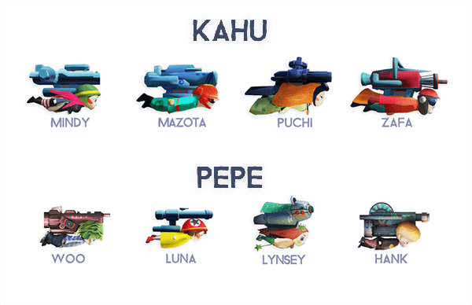

Flight of OhanaFlight of Ohana on Vimeo.
Flight of Ohana is a flight game for mobile devices that you can enjoy with your family, friends, significant other, or anyone close to you.
You will help lead Pepe and her protector, Kahu, out of a city under a magical curse. With the simplest of controls, you will experience an endless rollercoaster of excitement, joy, tension, and relief. There is no need to tackle this adventure alone, so grab whoever is nearest you and experience this new adventure together! Our Philosophy behind Flight of Ohana.
We developed this game with the goal of making an experience that you could enjoy with those dearest to you. We developed this game by playing with our own families. Because of the memories created with our loved ones, this became more than just a game for us.
Now you too can join up with your family, friends, or significant other, and make new memories together as Pepe and Kahu. Try out team play, and come up with tricks and strategies together to guide these characters to safety. Side by Side
In two-player mode, Flight of Ohana can be played on tablets or smartphones with two people taking the controls side by side. You each control your character by touching the area of the screen closest to you.
When playing in two-player mode, dialogue and close cooperation are essential. The Characters

Set in a Beautiful World
** Privacy Policy : http://www.buskerlab.com/en/privacy-policy-flight-of-ohana
|